· 正 · 文 · 来 · 啦 ·
有一妈妈看到我公众号【带着双胞胎去旅行】系列的文章，很惊讶我为什么带着两孩子还能去那么多地方浪里个浪。
我只能呵呵！我那不叫浪，叫过场子！
像我这种玩物丧志的家长，遇上精力旺盛的两个熊孩子，真的宁愿在外面玩得累死，也不想带着双胞胎男孩呆在家里闷死。
其实不一定非要跑去某个景点打卡就算是带着孩子开阔眼界，增加视野，若有心高质量地陪伴，哪怕拉着他们的小手压马路也是一场暖心的亲子游。
因此，时间不充裕但喜欢到处遛娃的你想知道有哪些户外亲子项目，我给出以下5个小贴士！
道理都懂，就看你愿不愿意行动啦！
#带去公园撒泼下
这是最省钱最简单的亲子游玩项目了。
尤其是双胞胎男孩，精力无处发泄，把他们丢到宽阔的大草地，踢球，掷飞盘，放风筝…
哪怕让他们在草地上任意打滚都能让你眉开眼笑：“嗯，玩那么疯，估计今晚秒睡！”
#带去游乐场嗨一下
几乎没有哪个小朋友对游乐场不感冒，蹦床，升降蘑菇，挖掘机，旋转飞车….
圆圈最爱玩蹦床，跳下去，弹起来好像飞起来一般….
#带去科学馆熏陶下
已经入园的孩子非常适合带去看博物馆，科学馆，美术馆等这些展览馆，虽然我粗人一只，文盲一个，但是被里面的科学知识和文艺气息熏陶下，也挺符合“言传身教”的育儿套路哈！
#带去植物园撩一下
可能这适合双胞胎女孩子，爱美的两姐妹花，躲在花丛中，灿烂地回眸一下，“咔嚓”一下，不用美颜滤镜，纯天然的美照就这么诞生了。美美哒！
有没有发现以上亲子游玩都有一个毛病，做家长的根本没有闲下来的功夫，想拿手机发朋友圈的时间都没有。
去公园玩看似轻松，但是陪着两孩子跑跑跳跳，马拉松选手也吃不消。
去游乐场玩，几乎都要大人陪同，而且必须一对一，心疼票子啊！这对双胞胎家庭来说，太不厚道了！简直欺人太甚，好不！
去科学馆溜达其实最惨，明明看不懂还要装懂给孩子们解释，尤其是两孩子肆无忌惮地在空旷的展馆高声惊叫时，你还要对着保安陪着笑脸say sorry！
去植物园拍照看似美美哒，但大前提是你有一个会拍照的队友，还有两个愿意配合你摆POSE的娃娃们，不然分分钟会被气到拔起一颗珍惜的植物使劲地揉虐….
鉴于此，还有一个馊主意，可以让你真正实现轻松陪玩的梦想，带两熊孩子去看儿童话剧吧！
这个idea得益于那次珠海长隆海洋王国之旅，园内有童话剧演出，我很惊讶圆圈居然对这些演出剧那么感兴趣，连最喜欢看的鲸鲨表演都忽略不计了。
这次看到有儿童话剧《爱丽丝梦游仙境》在深圳有演出！
3月23日终于要登陆深圳华夏艺术中心啦~
我默默地笑了！
我大深圳太给力了，居然招徕这部全球已上演千场的《爱丽丝梦游仙境》
从主办方那里了解到更多关于这个童话剧的信息后，我更加坚信圆圈兄弟一定会很喜欢看这种冒险题材的童话剧。
以下是关于儿童话剧《爱丽丝梦游仙境》的资料，有兴趣的家长接着往下看哦。
加拿大多媒体音乐剧
爱丽丝梦游仙境
ALICE IN WONDERLAND
导演Suzannee Goyette
童话丨亲子丨魔幻丨裸眼3D
#故事梗概#
小女孩爱丽丝因为追一只揣着怀表、会说话的兔子，她掉进了树洞，开始了一段奇幻之旅。
在神奇的地下王国里，爱丽丝和兔子一起探险，得知红心王后为了做世界上最大的蛋糕，要砍光整个魔法森林！为了保护森林里的生灵，她决定帮助公爵夫人。
最后，爱丽丝用智慧和勇气打败了红心王后，成功解救了公爵夫人和这个神秘地下世界的朋友们。
#剧目特点#
● 音乐——德国广播交响乐团加盟制作
10首原创歌曲，本剧主题曲《勇敢的梦》由世界著名乐团----德国广播交响乐团（German Radio Orchestra）于北京音乐厅为该曲录制配乐。
▲德国广播交响乐团
现场录制主题曲《勇敢的梦》演唱者：喻越越
● 画面——国际顶级3D制作
数虎图像（国内最专业的数字视觉服务商之一）立体制作的3D多媒体影像将给观众带来更加身临其境的视觉感受。纱幕投影、立体影像与多媒体演员的交互表演，更是会让 人无法分辨虚实，3D动画角色的加入也让舞台更加生动。
● 技术——多媒体技术 奇幻仙境身临其中
本剧目以影像舞美为主，少量布景为辅。舞台映射出的影像不仅仅是作为一个变幻莫测的场景展示，而且在很大程度上成为了表演的一部分。
与演员表演相辅相成，无缝配合，让亲临剧场的观众感受从未体验过的遐思冥想，惊叹于创作者天马行空的想象力；使观众所能看到能听到的是一般舞台剧不可能表现出的“视听幻想曲”，重新解构了音乐、戏剧与多媒体的原有定义。
● 虚拟支持人现场互动
另外本剧创新引入“虚拟主持人”应用系统，放弃生硬的说教和幼稚的互动，观众与演员之间、观众与剧情之间、亲子之间的互动与交流，将让这个流传已久的故事焕发新光彩。
#演出回顾#
2015年它首次被改编成为多媒体音乐舞台剧，加拿大原版曾在全世界十余个国家演出千场，获得广泛好评。
▼爱丽丝在上海保利剧院▼
如今《爱丽丝梦游仙境》做为中国上海-加拿大蒙特利尔市缔结姐妹城市30周年系列活动献礼作品，得到两国政府大力支持。
▼爱丽丝在马来西亚▼
自2015年元旦上海东方艺术中心首演以来，走过了全国200多个城市，演出了1000余场，与此同时还走向了香港、新加坡、韩国、马来西亚、卡塔尔等特区以及海外城市，因其超凡新颖的观剧体验，所到之处都一票难求！
▼爱丽丝在韩国▼
#主创阵容#
精彩剧照
如果你看到这句话，那说明你对这部音乐童话剧还是蛮感兴趣的哦！
果然，你一定也是被秩序敏感期+诅咒敏感期+动作敏感集一身的双胞胎孩子们折腾得没有套路可言了！
那咱先来了解下最关心的问题：票价！
☟☟官方票价如下☟☟
演出票价：100/180/280/380
亲子套票：280*2=520 180*2=340
家庭套票：280*3=770 180*3=500
嗯！有点小贵，而且，对于双胞胎家庭，这票价还要乘以2！（心疼票子...）
莫慌！
凭着孖仔帮育儿家长群的帮主身份，与主办方沟通了下，给大家争取到原票价的八五折！
☟☟优惠8.5折票价如下☟☟
演出票价：85/153/238/323
亲子套票：280*2=442 180*2=289
家庭套票：280*3=655 180*3=425
有木有很激动？
果然，双胞胎有特殊待遇哈！
☟☟演出信息☟☟
演出时间：
2019年3月23日10：30/15：00
演出场地：
深圳华夏艺术中心
演出地址：
深圳市南山区华侨城光侨街1号
☟☟订票事宜☟☟
订票方法：
添加圆圈妈微信号sgguy-com，备注《爱丽丝梦游仙境深圳站》，获取8.5折优惠票。
发货方式：
付款成功后，1--2个工作日内，票将由主办方包邮直发，一般发中通，韵达或者顺丰。
客服方式：
对票务信息有任何疑虑，均可以找圆圈妈协助沟通！或拨打官网的咨询电话：400-086-9980
其他注意事项
一人一票，儿童全票。
票品一经售出，概不退换！
-END-
阅读原文
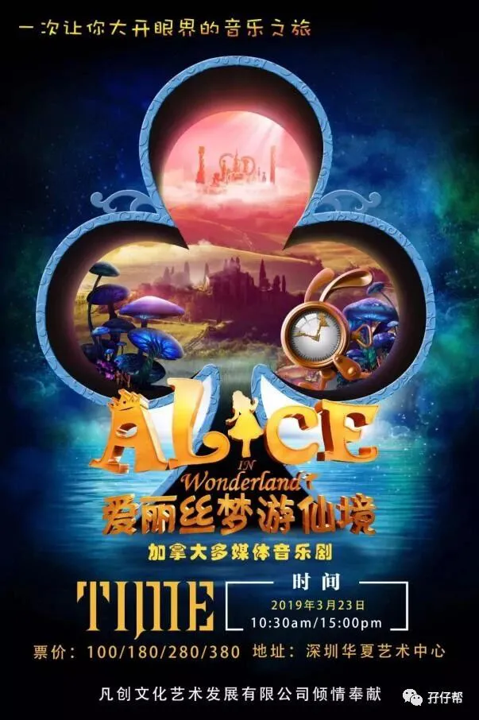
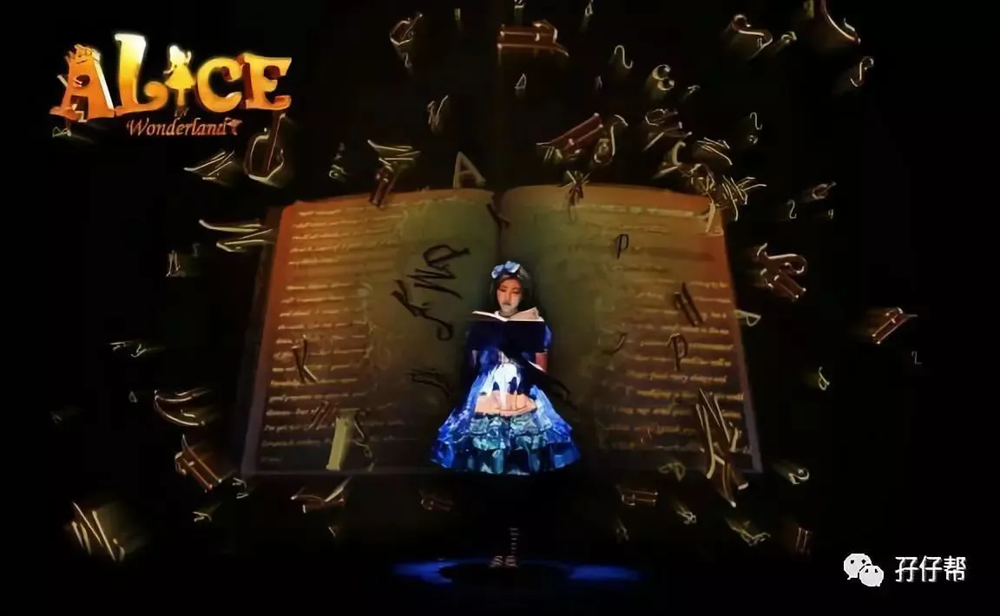
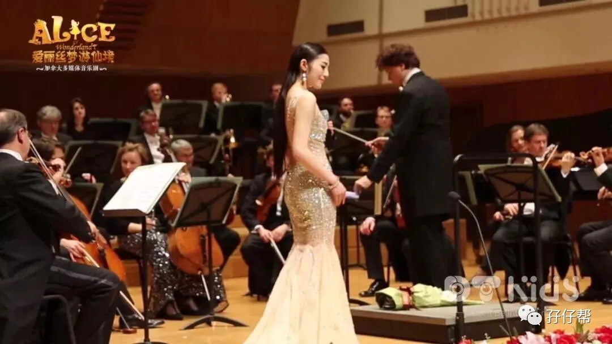
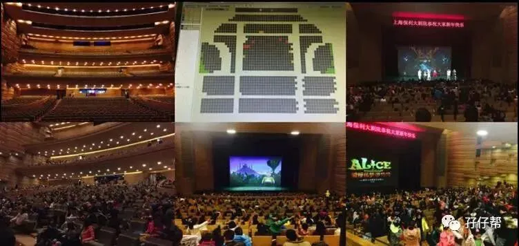
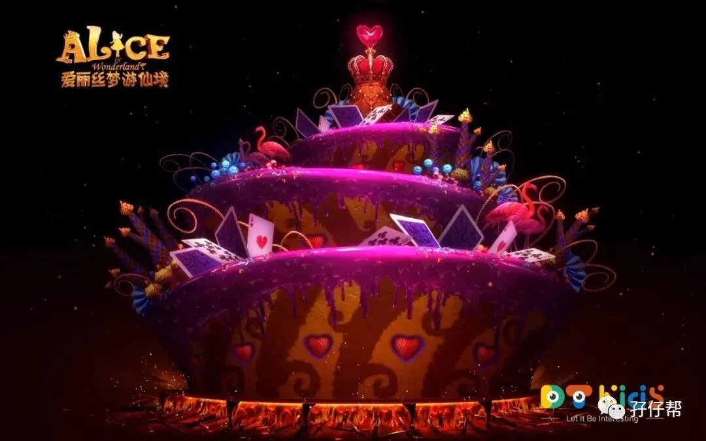
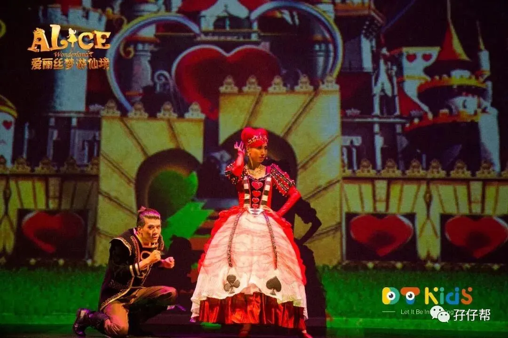
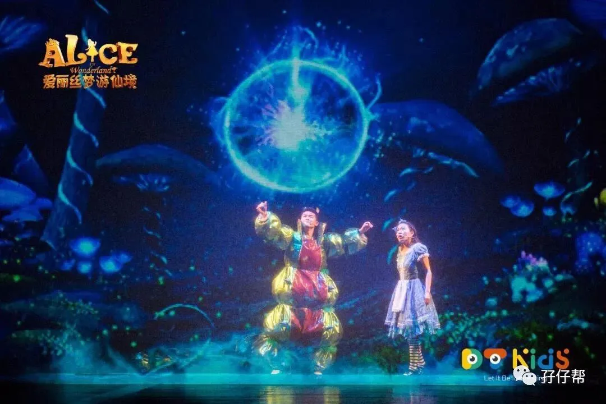
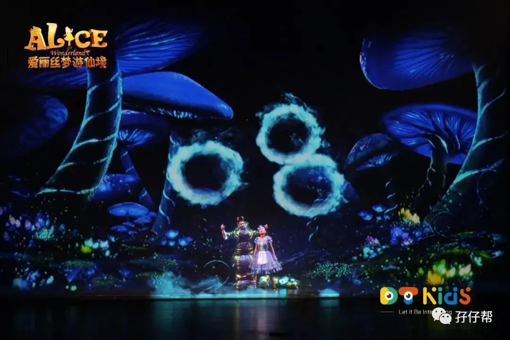
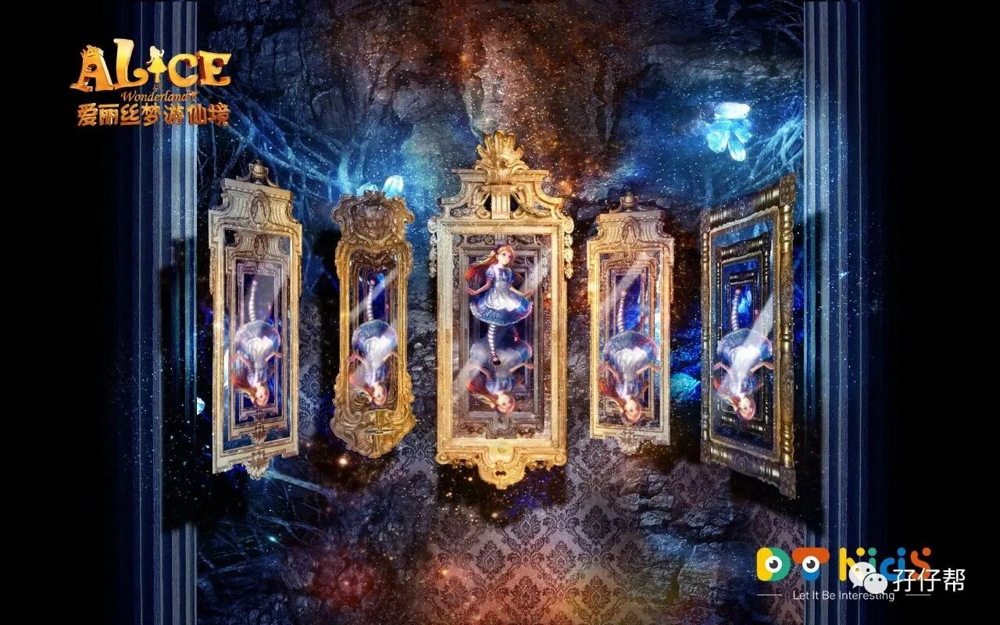
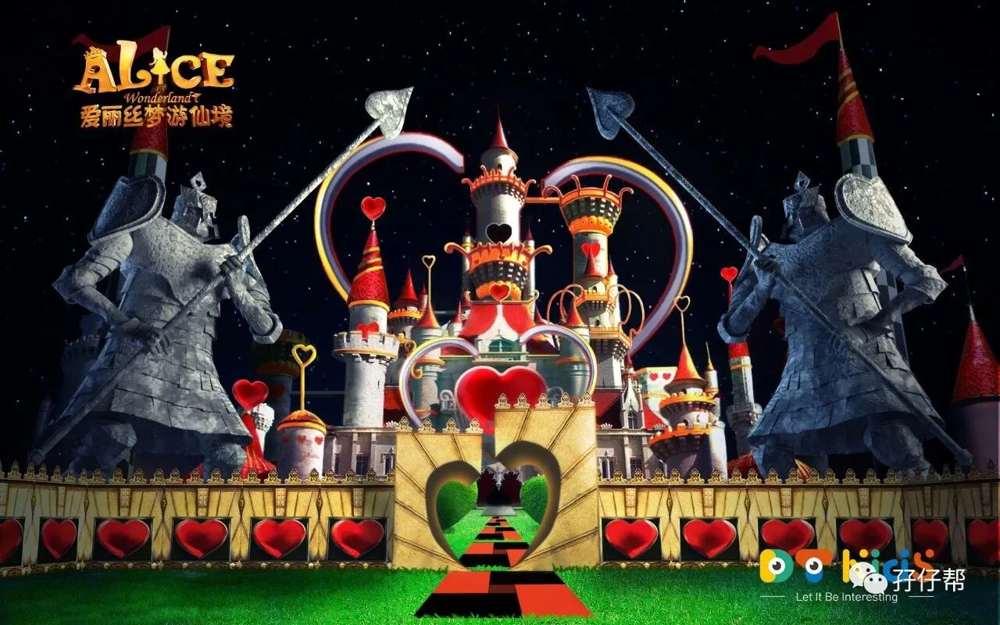
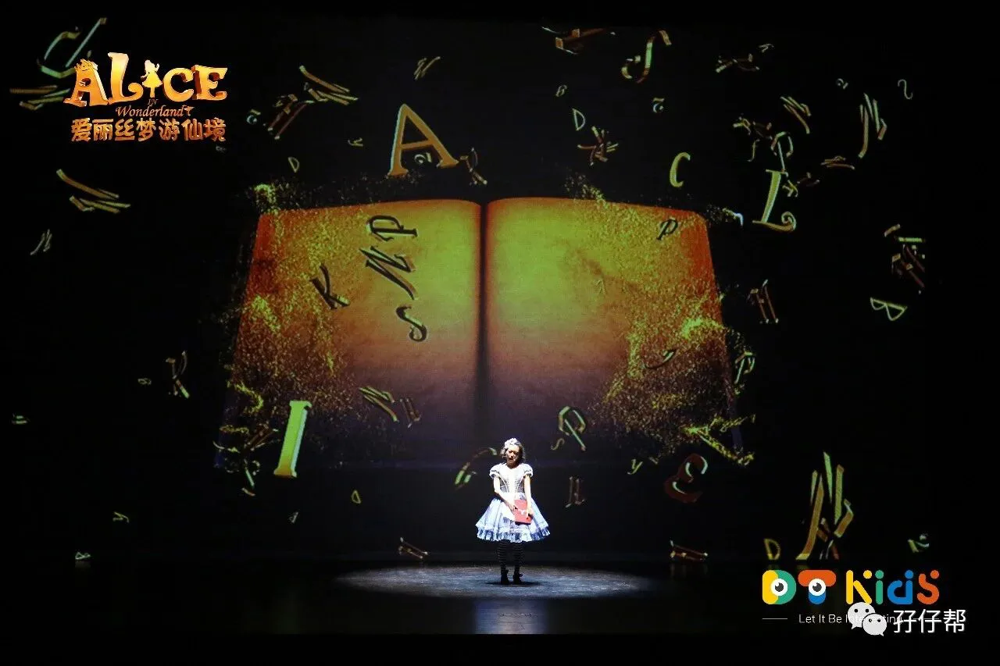
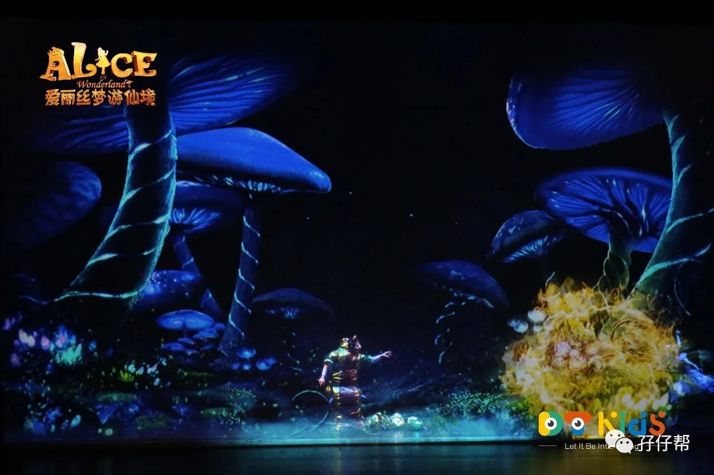